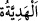
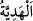

gücüyle zelil oldukları için alçaltırlar, hor ve hakir kılarlar. İşte onlar peygamberlere ve
velîlere böyle yaparlar. Çünkü onlar, kenz-i mahfîyi (gizli hazineyi) ortaya çıkarmak
üzere bu sıfatlara ayna olmak için yaratılmışlardır. Buna göre Bâyezîd Bistâmî
(k.s.)’un dediği gibi “Hükümdarlar bir memlekete girdiler mi…” âyeti, ârifin sıfatı
olur.
Câfer-i Sâdık (k.s.) der ki: “Bu âyet mü’minlerin kalblerine işâret eder. Çünkü
ma’rifet kalblere girince, bütün boş temennîler ve istekler zâil olur. Kalbde Allah’tan
başkasına yer kalmaz.”
İbn Atâ (r.h.) der ki: “Kalbde Hakk’ın sultanı ve ta’zimi zâhir olunca, bütün gafletler
dağılır gider. Kalbi heybet ve iclâl (yüceltme) kaplar. Artık onda Hak’tan başkasına
ta’zim kalmaz. Âzâları ancak O’nun tâati, dili ancak O’nun zikri ve kalbi de ancak O’na
yönelme ile meşgul olur.”
Bazıları da demiştir ki: “Kime el-Melik ismi ile mukâbele olunursa kendisini O’nun
kabzasında/kontrolünde görür, memleketinde O’na teslim olur ve O’na hizmet sahasında
O’na hakkıyla hürmeti yerine getirir.”
el-Fütûhâtü’l-Mekkiyye’de der ki: “Hükümdara yakışan, şu üç şey dışında her
konuda affedici olmaktır: Haremine taarruz, sırrını ifşâ ve mülkünü/hükümranlığını
tanımamak.”
Allah Teâlâ’dan taleb yolunda güzel edeb niyâz ederiz.
35. Ben (şimdi) onlara bir hediye göndereyim de, bakayım elçiler ne (gibi bir
sonuç) ile dönecekler.
“Ben (şimdi) onlara” Süleyman’a ve kavmine elçiler vâsıtasıyla büyük “bir hediye
göndereyim de, bakayım elçiler” onun yanından “ne (gibi bir sonuç) ile” hangi şeyle,
cevapla “dönecekler” ta ki ben de durum neyi gerektirirse onu yapayım.
“ nâzik ve yumuşak bir yolla birine armağan edilen şeyin ismidir. el-
Müfredât’ta der ki: “ bazımızın bazımıza verdiği lütf olarak kullanılan bir
kelimedir.”
Keşfü’l-esrâr’da der ki: “Burada “bakayım” bekleyeyim anlamındadır.”
Rivâyete göre Belkıs Süleyman (a.s.)’a şunları göndermişti: Üstlerinde câriyelerin
elbiseleri, bilezikler, halkalar ve küpeler gibi onların süsleri bulunan, elleri kınalanmış,
altın ve kıymetli mücevherlerle işlenmiş yular ve eğerleri olan atlara binmiş beş yüz
köle. Kısrakların üzerinde erkek kölelerin kıyafetinde beş yüz câriye; bin külçe altın ve
gümüş…
Mesnevî’de der ki: